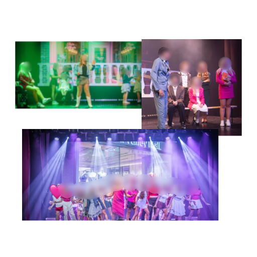
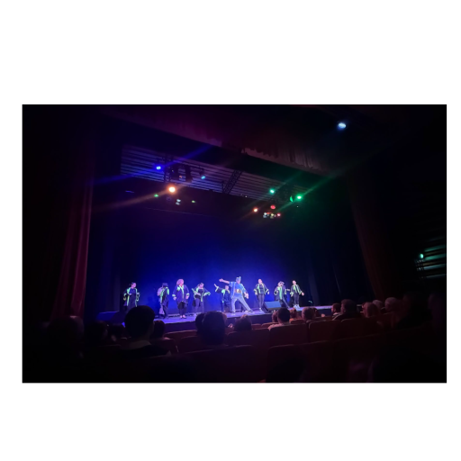

Home
Portfolio
Contact
Home
Portfolio
Contact
Portfolio
Legally Blonde Jr
8/2/26
For Legally Blonde Jr, I operated lighting on an Avolites Tiger Touch II. The tech run was over 3 days, two of which were rehersals where I fixed lighting cues.


Once Upon A Pantomime
19/11/25
For Once Upon A Pantomime, I operated the show's lighting on an Avolites Tiger Touch II. There was a section in one scene which required the busking of lights.
The Addams Family Jr
17/8/25
LAPA Summer Showcase 2025
6/7/25
For this show, I busked lighting using an Avolites Tiger Touch II. The lighting rig consisted of moving head wash lights, led beams and some blinders.
The Little Mermaid Jr
12/4/25
Under the sea 🐟
Aladdin On Ice
12/24
I operated a followspot for my local ice rink's performance of Alladin On Ice.
Scroll Christmas Concert
12/23
I programmed and busked lighting to my school's 2023 Christmas Concert.
2026 Murray Galbraith